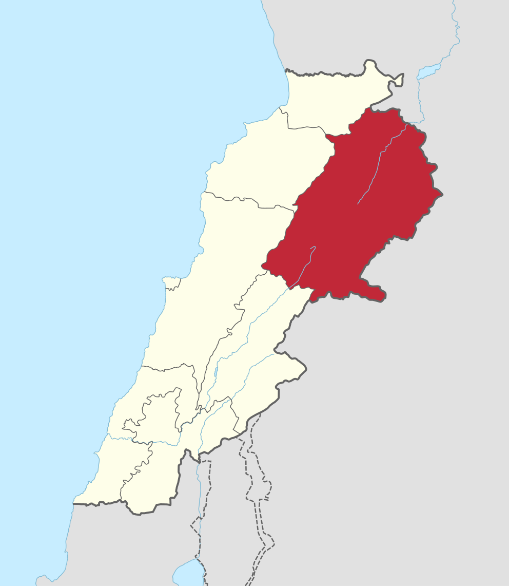

Baalbek is an ancient Phoenician city located in what is now modern-day Lebanon, north of Beirut, in the Beqaa Valley. Inhabited as early as 9000 BCE, Baalbek grew into an important pilgrimage site in the ancient world for the worship of the sky-god Baal and his consort Astarte, the Queen of Heaven in Phoenician religion (the name 'Baalbek' means Lord Baal of the Beqaa Valley). The center of the city was a grand temple dedicated to Astarte and Baal and the ruins of this early temple remain today beneath the later Roman Temple of Jupiter Baal. Baalbek is listed by UNESCO as a World Heritage Site.
